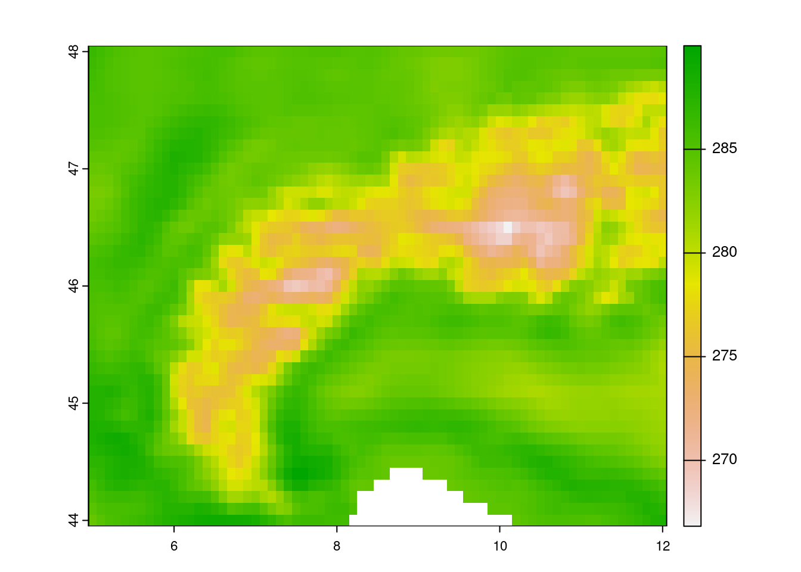
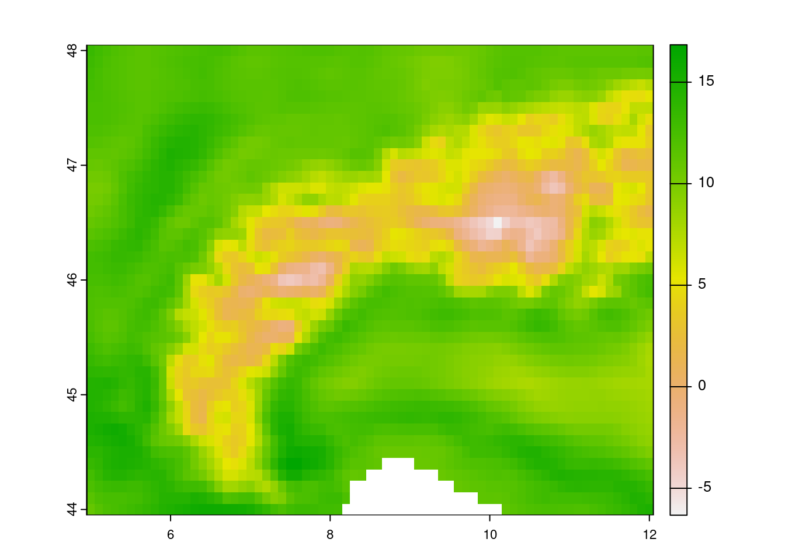
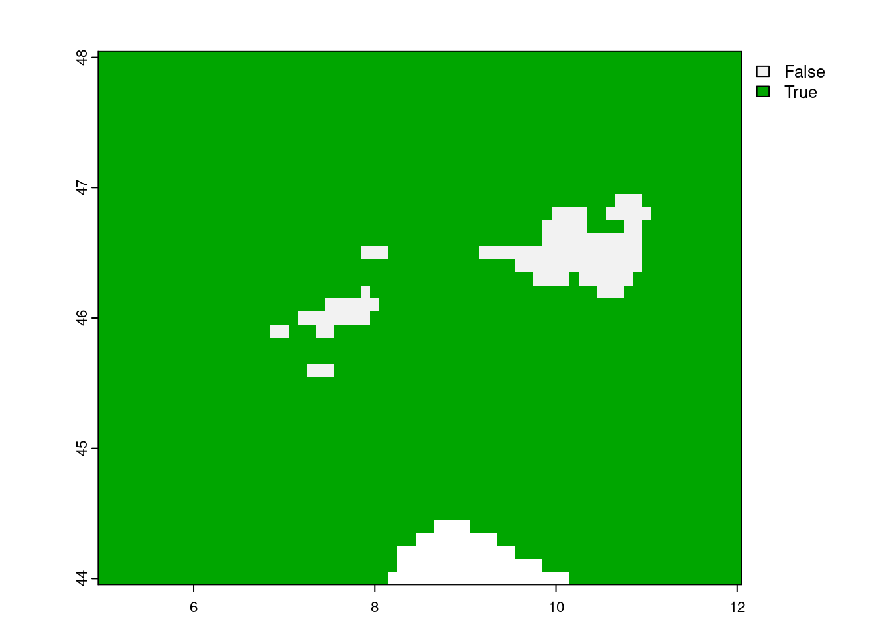
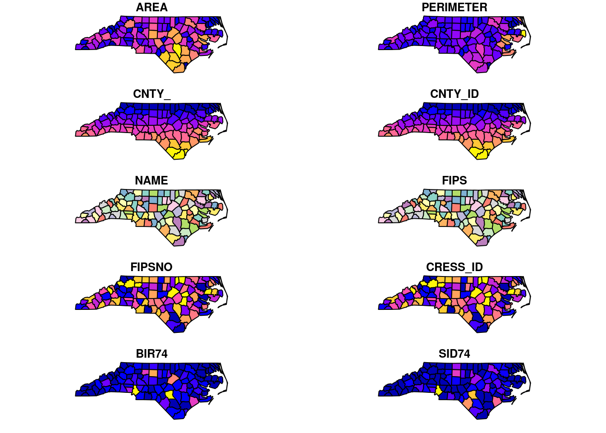
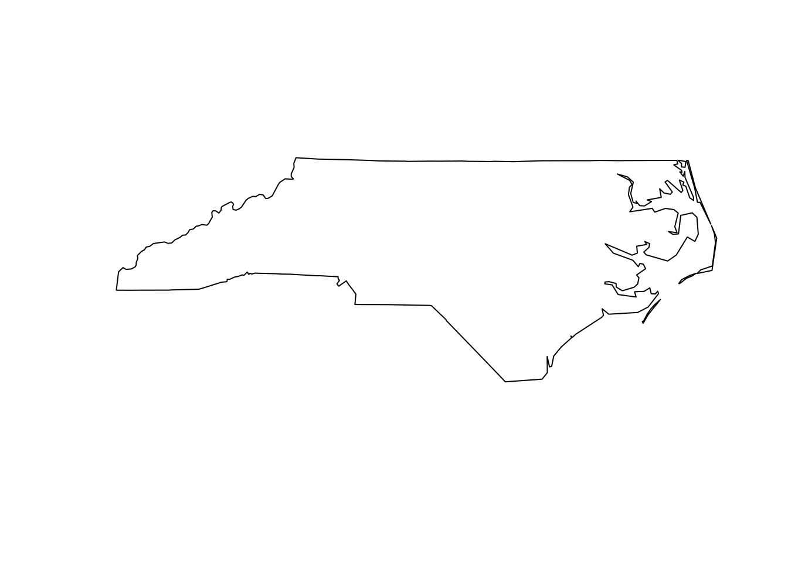

3 Geospatial data in R
Geospatial data procesing in R follows the standard raster vs. vector data model dichotomy as seen throughout most geographic information systems (GIS). Here raster data represent continuous data on a (fixed) grid, while vector data describe geographic features using points, lines and polygons (shapes). The main difference between both types is their sensitivity to resolution, which is predetermined in the case of raster data, while undetermined using a vector topology. This difference in data models used also determines the advantages and disadvantages of both models, where vector topology is resolution independent data efficient in storage the handling if mathematical (topological) operations can be computationally expensive. On the other hand raster data has a fixed lower limit to its resolution, while often being computationally efficient when modelling.
{kind=link}
Most geospatial data handling in R happens using lower level GDAL/OGR bindings. The GDAL/OGR library is an open source framework for geospatial processing and is used across programming languages and geospatial frameworks or GIS systems (e.g. QGIS).
- what are the current limitations? (look up description / Twitter thread)
- should be in email archive somewhere
3.1 The R geospatial ecosystem
A number of libraries (packages) make geo-computational work in R easy. However, the ecosystem has grown rapidly and therefore is continuously shifting. Unlike other processing environments this makes it at times hard to keep track of what to use when. Here I give a quick overview of the basic functionality and their uses cases of all these packages, finally there will be a brief overview of some basic geospatial operations using mostly terra and sf libraries (see Section 3.1.1 and Section 3.1.2). For a more extensive, deep dive, of all these packages I refer to Nowasad et al (FIX REF).
3.1.1 The terra package
The terra package is the successor of the older raster package, but with a simpler interface. This package deals with both geographic raster and vector data, with the explicit requirement that raster data represent spatially continuous processes on a fixed (rectangular) grid.
Limitations:
- works with pointers to the data (out/in of memory)
- need to save intermediate results
# load the library
library(terra)
# read data from file
r <- terra::rast("geotiff.tif")We can inspect the meta data by calling the object, or we can visualize the data by plotting the data:
print(r)class : SpatRaster
dimensions : 41, 71, 1 (nrow, ncol, nlyr)
resolution : 0.1, 0.1 (x, y)
extent : 4.95, 12.05, 43.95, 48.05 (xmin, xmax, ymin, ymax)
coord. ref. : lon/lat WGS 84
source : demo_data.nc
varname : t2m (2 metre temperature)
name : t2m
unit : K
time : 2022-01-01 12:00:00 UTC plot(r)
print(time(r))[1] "2022-01-01 12:00:00 UTC"print(names(r))[1] "t2m"Basic math or logical operations can be performed on maps:
# conversion from Kelvin to C
r_c <- r - 273.15
plot(r_c)
Logical operations
# all locations above freezing
# as a binary mask
m <- r_c > 0
plot(m)Masking values
# all locations above freezing
# as a binary mask
m <- r_c > 0
plot(m)
saving data:
# save data to file
terra::writeRaster(r_c, "raster_data_celsius.tif")Convert to data frame (long oriented format not a matrix or an array)
df <- as.data.frame(r, xy = TRUE)
head(df) x y t2m
1 5.0 48 286.4682
2 5.1 48 286.0754
3 5.2 48 285.6437
4 5.3 48 285.3351
5 5.4 48 285.0714
6 5.5 48 284.84693.1.2 The sf package
Simple features are an open standard to store and access geographic data. The sf package provides a way to represent geospatial vector data as simple features in R. This results in nested data.frames or tibbles which adhere to the “tidy” data paradigm as previously described. They therefore are long oriented and support piped workflows on geometries. This standard reduces complexity and keeps geometry operations simple.
# load library
library(sf)
# load included shapefile
nc <- st_read(system.file("shape/nc.shp", package="sf"))Reading layer `nc' from data source
`/home/runner/.cache/R/renv/cache/v5/R-4.2/x86_64-pc-linux-gnu/sf/1.0-12/5b41b4f0bd22b38661d82205a87deb4b/sf/shape/nc.shp'
using driver `ESRI Shapefile'
Simple feature collection with 100 features and 14 fields
Geometry type: MULTIPOLYGON
Dimension: XY
Bounding box: xmin: -84.32385 ymin: 33.88199 xmax: -75.45698 ymax: 36.58965
Geodetic CRS: NAD27When printing the object you will be provided with an overview, when plotting you see the spatial data.
print(nc)Simple feature collection with 100 features and 14 fields
Geometry type: MULTIPOLYGON
Dimension: XY
Bounding box: xmin: -84.32385 ymin: 33.88199 xmax: -75.45698 ymax: 36.58965
Geodetic CRS: NAD27
First 10 features:
AREA PERIMETER CNTY_ CNTY_ID NAME FIPS FIPSNO CRESS_ID BIR74 SID74
1 0.114 1.442 1825 1825 Ashe 37009 37009 5 1091 1
2 0.061 1.231 1827 1827 Alleghany 37005 37005 3 487 0
3 0.143 1.630 1828 1828 Surry 37171 37171 86 3188 5
4 0.070 2.968 1831 1831 Currituck 37053 37053 27 508 1
5 0.153 2.206 1832 1832 Northampton 37131 37131 66 1421 9
6 0.097 1.670 1833 1833 Hertford 37091 37091 46 1452 7
7 0.062 1.547 1834 1834 Camden 37029 37029 15 286 0
8 0.091 1.284 1835 1835 Gates 37073 37073 37 420 0
9 0.118 1.421 1836 1836 Warren 37185 37185 93 968 4
10 0.124 1.428 1837 1837 Stokes 37169 37169 85 1612 1
NWBIR74 BIR79 SID79 NWBIR79 geometry
1 10 1364 0 19 MULTIPOLYGON (((-81.47276 3...
2 10 542 3 12 MULTIPOLYGON (((-81.23989 3...
3 208 3616 6 260 MULTIPOLYGON (((-80.45634 3...
4 123 830 2 145 MULTIPOLYGON (((-76.00897 3...
5 1066 1606 3 1197 MULTIPOLYGON (((-77.21767 3...
6 954 1838 5 1237 MULTIPOLYGON (((-76.74506 3...
7 115 350 2 139 MULTIPOLYGON (((-76.00897 3...
8 254 594 2 371 MULTIPOLYGON (((-76.56251 3...
9 748 1190 2 844 MULTIPOLYGON (((-78.30876 3...
10 160 2038 5 176 MULTIPOLYGON (((-80.02567 3...plot(nc)
Union of all features
u <- st_union(nc)
plot(u)
3.1.3 The stars package
Spatiotemporal data often comes in the form of dense arrays, with space and time being array dimensions. Examples include
socio-economic or demographic data,
environmental variables monitored at fixed stations,
raster maps
time series of satellite images with multiple spectral bands,
spatial simulations, and
climate or weather model output.This R package provides classes and methods for reading, manipulating, plotting and writing such data cubes, to the extent that there are proper formats for doing so.
3.1.4 Other noteworthy packages
Other critical packages are
- ncdf4
- stacr
- sits
Note that R (or python for that matter) is infinitely flexible, and many packages exist to address niche problems within the context of geospatial data manipulation. Although often tapping into the power of the GDAL framework these packages are very powerful in their own right but outside the scope of this basic introduction. I refer to the work and packages of Michael Rutter and … for a list of advanced data wrangling.